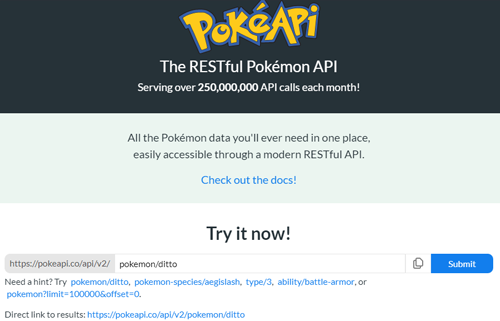

Overview
My Pokedex App is a Javascript application that pulls from the PokeApi from pokeapi.co to display images and various states of pokemon.
Purpose & Context
Pokedex App was a personal project I built as part of my web development course at
CareerFoundry to demonstrate my knowledge of Javascript, DOM interaction and use of APIs.
It also was my first go with using JQuery and Bootstrap. I personally am a huge fan of Pokemon
and because the franchise is so diverse with so many 'characteristics' of each creature,
Pokemon makes a perfect API to have various snippets of info to pull from and use for an application.
Believe it or not, a lot of Pokemon fans love to learn things like height and weight of their favorite poke-partner.
Objective
The aim of the project was to have an working application that could be used in my portfolio to show skill in using various
functions in Javascript, using UI patterns,
extracting data from APIs and use JS Libraries.
Approach
API
I used the RESTful API (Application Programming Interface ) from https://pokeapi.co/ to pull information needed for various pokemon info,
such as images and stats. I used Ajax principals to fetch
the image and stats of various 150 pokemon from the API. This way I would have
fun information to display in the modal!
Modal
Using both the Javascript library jQuery to create methods to pull the API information, I also used the UI framework bootstrap
to make a nice looking modal to display the information pulled from the API. Users would just have to
click on the name of their desired Pokemon and have a window pop up with their image and stats.
Takeaways
Challenges
Since this was my first time learning Javascript and the various components that can go into a JS application, I found the jump from a mark up language
like HTML to an actual coding language like JS jarring. In the beginning I was having trouble understanding
how functions are used and how to implement ajax and fetch the data needed
to display. I was able to figure out how to successfully complete the project with help from self-studying the jQuery & ajax documentation, along with
guidance from my mentor and tutor.
Duration
The development of the project in total took about two months to complete. Most of my time was spent trying to get the modal
to display the information about a particular pokemon when clicked on by a user. This is due to not completely getting the
hang of functions and promises in JS.
Thoughts
Even though by most standards this is a pretty simple application, I am very proud I was able to complete
my first Javascript application. I helped me cement that if I kept at it, I would eventually
work out the bugs and find solutions to produce a nice looking, functioning application.
Credits
Lead Developer: Courtney Webster
Tutor: Yannick Morelga
Mentor: Tanzim Mokammel